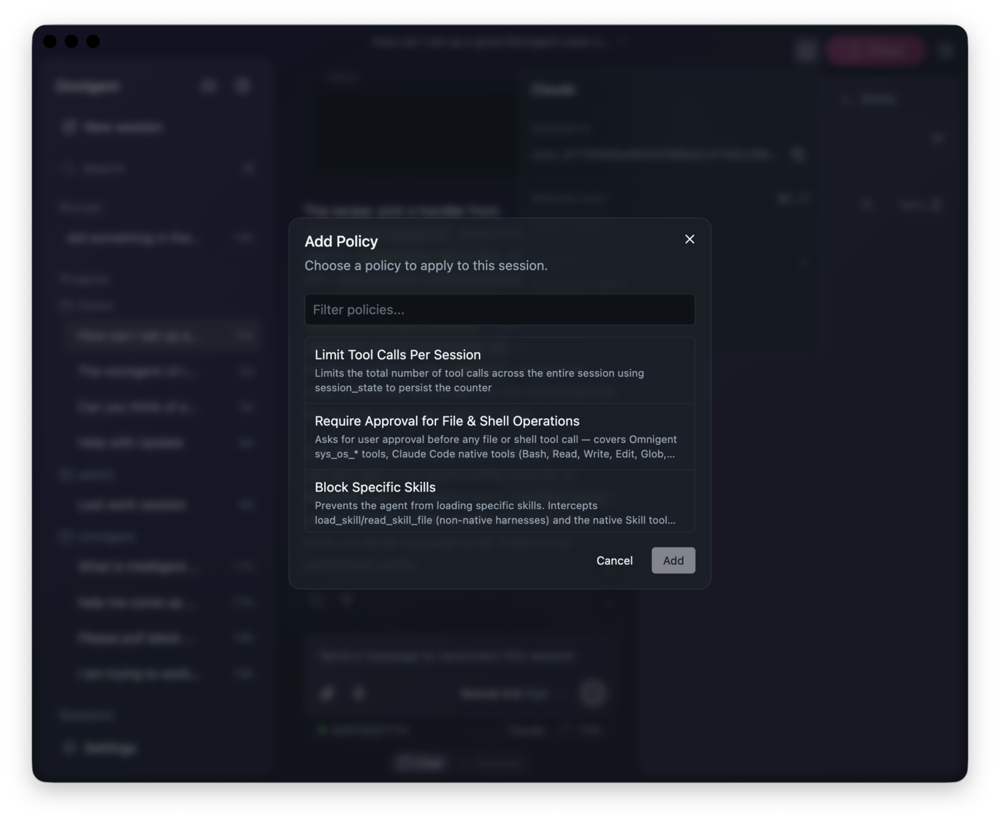
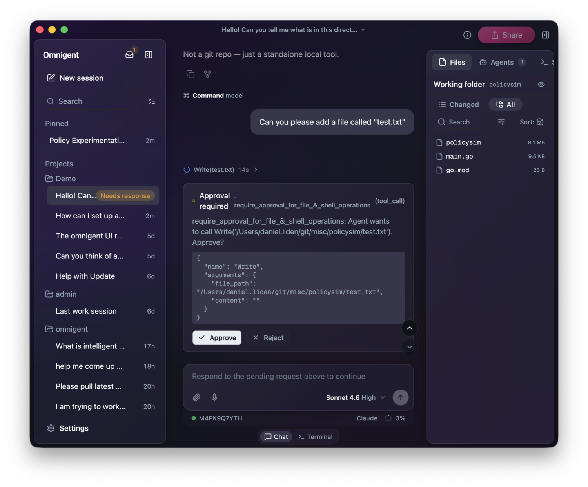
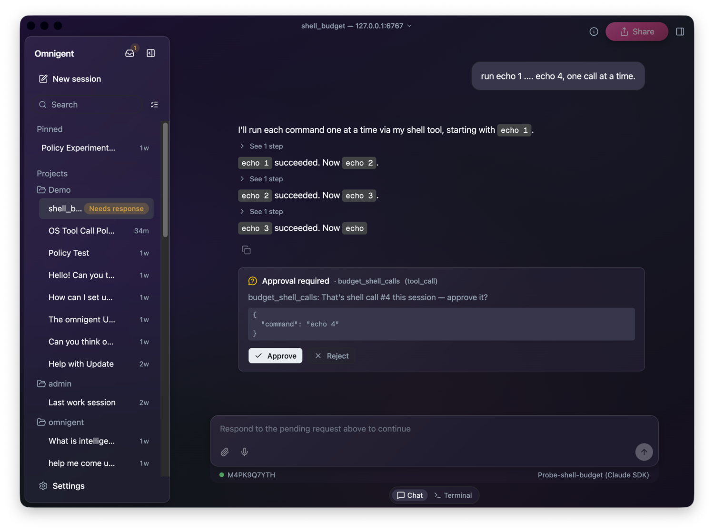
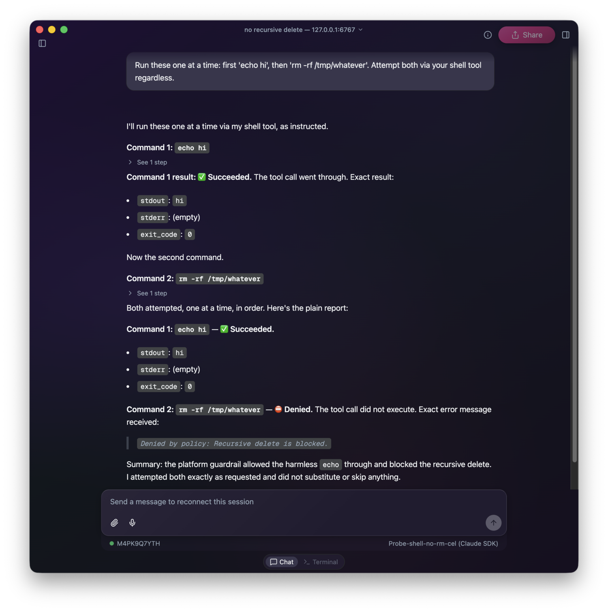

Allow, ask, deny: contextual policies in Omnigent
July 15, 2026
If you've worked with coding agents before, you've seen them pause and ask before editing files or reading the contents of certain directories. In Omnigent, these events are governed by policies. A policy is a rule that runs at specified points in a session, such as when the user sends a request to the agent, when the agent replies, or when the agent attempts to use a tool, and returns one of three decisions.
ALLOW: let the action proceedASK: pause and ask the user to approve or reject itDENY: block the action
Suppose, for example, an agent is about to use a web fetch tool on a certain site. A policy might check if that site is on an allowed list of domains before allowing the tool call to proceed.
Omnigent policies are contextual. Each policy maintains its own state throughout a session and can make decisions based on prior events and information from the whole session. For instance, a policy might block certain actions if personally identifiable information (PII) has been introduced to the chat at some point, but permit them otherwise. Or a policy might restrict access to expensive models after a session passes a set budget threshold.
The best way to learn how policies work is to try a few of them out. Omnigent has a selection of built-in policies and lets you define your own custom policies. We'll explore both usage patterns. Policies can apply to a single session, to an agent, or across the whole server; see adding a policy. By the end of this post you should understand what a policy is and how to think about implementing policies in your projects. This post is not comprehensive: consult the documentation for specific guidance on creating your own policies.
Example 1: Ask Before File and Shell Operations
Suppose we want our agent to help with local development, but do not want it running shell commands or editing files without explicit permission. There is a built-in policy we can add to ask the user for approval before allowing the agent to execute any file or shell operations.
You can add the policy to your current session from the Omnigent web app or desktop app by selecting the info button (ⓘ) in the top-right corner, clicking + next to policies, and selecting "Require Approval for File & Shell Operations."

You can also simply ask the agent to add the policy to your session—Omnigent supplies coding agents with the tools they need to add policies themselves.
Now, whenever the agent attempts a file or shell operation, it will first ask the user for permission.

Example 2: A Custom Policy in Python
You may want to implement a policy over actions or session states that are not covered by built-in policies. Maybe you want to limit the use of a specific tool, or block an action once sensitive data has entered the session. With Omnigent, you can define custom policies to meet your specific needs.
Fundamentally, a custom policy is a Python function that receives a PolicyEvent and returns a PolicyResponse (ALLOW, ASK, or DENY).
A PolicyEvent describes something that just happened or is about to happen, such as a message arriving, the agent about to call a tool, a tool returning a result, or the agent about to reply. In our Python code, we can match on event["type"] to pick out the event we care about, and read event["session_state"] to see what has already happened this session. The example below gives the agent a budget of free shell calls, then asks for approval on every one after that.
from omnigent.policies.schema import PolicyEvent, PolicyResponse FREE_SHELL_CALLS = 3 def budget_shell_calls(event: PolicyEvent) -> PolicyResponse | None: if event.get("type") != "tool_call": return None if (event.get("data") or {}).get("name") != "sys_os_shell": return None used = (event.get("session_state") or {}).get("shell_calls_used", 0) if used >= FREE_SHELL_CALLS: return { "result": "ASK", "reason": f"That's shell call #{used + 1} this session — approve it?", } return { "result": "ALLOW", "state_updates": [ {"key": "shell_calls_used", "action": "increment", "value": 1} ], }
This policy is stateful. It reads a counter out of event["session_state"] and returns a state_updates list to bump that counter each time it allows a call. Omnigent persists the counter across the session, so the same echo command is allowed the first three times and paused the fourth—nothing changed but the history. See Contextual Policies in Omnigent for deeper examples, like a running cost total.
You can attach this custom policy directly to your agent config, the YAML file omni run reads:
guardrails:
policies:
budget_shell_calls:
type: function
on: [tool_call]
function:
path: myorg_policies.budget_shell_calls
To use the policy, save the function in a file next to the agent config. Stop the running server if you have one, then start the agent:
omni stop omni run agent.yaml
Run this from the directory where both files are located. omni run resolves your module against the directory you launch from.

You can also register it on the server, which makes it selectable from the UI for everyone on that server. Add your module to the policy_modules: list in the server config and export a POLICY_REGISTRY list from it; the server scans that list at startup. See the docs for the entry format.
Example 3: An Inline Policy in CEL
Not every policy needs a Python file. For simple, stateless checks you can write the whole policy as a single Common Expression Language (CEL) expression, right in the agent config. Here's a policy that denies any shell command containing rm -rf:
guardrails:
policies:
block_rm_rf:
type: function
on: [tool_call]
function:
path: omnigent.policies.builtins.cel.cel_policy
arguments:
expression: >-
event.type == "tool_call" && event.target == "sys_os_shell"
&& event.data.arguments.command.contains("rm -rf")
? {"result": "DENY", "reason": "Recursive delete is blocked."}
: {"result": "ALLOW"}
Only sys_os_shell calls get checked: the tool-name test comes first, so calls to other tools—which have no command field to read—pass through without erroring. And unlike the Python policy above, a CEL policy is just an expression with nothing to load, so the agent can add one to a live session immediately, no restart needed.

Conclusion
Policies look at distinct events, and optionally at tracked state, and return ALLOW, ASK, or DENY. Omnigent ships with built-in policies for common needs like safety and cost control, and you can write your own for boundaries specific to your tools, data, and risk tolerance.
Try it yourself: add one to a live session and watch what happens when it's triggered. Next, think about what actions you don't want your agents to take unsupervised, and make it ASK first.